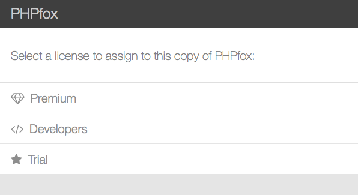
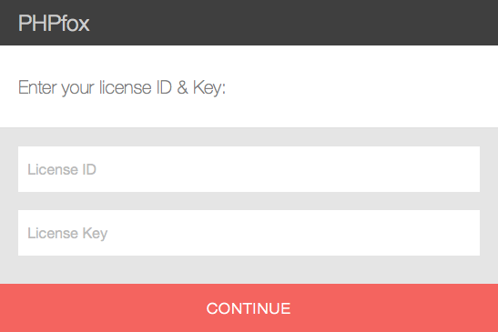

Installing PHPfox
This guide will help you through the installation process of PHPfox v4 or higher.
Downloading
Download the latest version of PHPfox from here.
Once you have downloaded and unzipped the package, you should see something like this…

You are to upload those files and folders to your sites root directory.
Web Installer
Once all the files have been uploaded, using your web browser of choice visit your site.
The first step of the web install, will be to select what type of license to assign to this copy of PHPfox.

If you have purchased a license and wish to connect to our store front select Premium.
Enter your License ID & Key
The next step will require you to enter your PHPfox License ID & Key, which was sent to you via an email directly after your purchase.

Database Configuration
PHPfox uses MySQL(i) and you can use a local or remote server. If you do not have or know your database credentials, just contact your host and they will point you in the right direction.

Once you have entered all the correct details and run the web installer, it will get everything setup in no time.
Administrators Account
You are almost done! Your final step will be to create an administrators account. You can change any of the details you add here later, so don’t sweat it. One thing you might want to take a moment to think about, is your password. Make it a good one, your Admin account comes with great power.

Congratulations! You have successfully installed PHPfox.